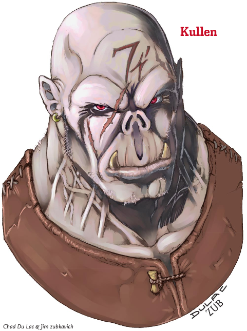

Week 4 - A gang of thugs, a necromancer, and a strange green worm.
I'm afraid that these notes may not be as complete as we might wish. The session was pretty complex and the campaign notes don't really cover this section of the adventure that well. Also, I personally am not in an inventive temper right now, so this will be just the facts.
The party decide to investigate the Land farmstead, but first agree to wait a couple of days for Flash to recover from his encounter with the ghost. During this hiatus, the party pick up a new acquaintance - whose name started with J (I remember that much, anyway). J is handy with both blackjack and lockpick.
The party approach the old farmstead. After a bit of foofing around, Tom enters the building and encounters a wounded owlbear, which he dispatches with one blow, on account of him being horribly minmaxed. The party find in the rubble a baby owlbear who is immediately adopted by Frith, and an uneaten human arm. The arm bears a tattoo which Flash recognises as being that with which Garavin Vest used to brand his workers. Garavin Vest was bankrupted by Balabar Smenk years ago and died early last year. A brief foray into town to gather information reveals that a gang of Vest's previous employees are working now for Smenk as - shall we say - troubleshooters, and might regularly be found down at The Feral Dog of an evening. The gang is led by Kullen, the meanest half-orc in town, known for his rages. Also in the gang are Rastophan the TWF ranger, Todrik the polearm fighter, and Merovinn Bask the mage.
Kullen's gang is supposed to be a difficult and dangerous encounter. But this party has a half-ogre in it, which will give anyone pause. Consequently, Kullen did not do anything much until Tom left the room. The wuss.
That night, the party enter The Feral Dog, and it doesn't take them long at all to leave their DM completely at sea. Flash, Tom, and J enter the bar, leaving Arn and Frith outside. There is a dog fight in progress, and Tom steps into the ring to break it up. This causes immediate outrage among the punters, but they flee in short order once Tom starts dealing subdual damage. At some point in there, both dogs were rendered unconcious - one by subdual damage from Tom and one by a spell, and Tom picks them up. The inkeeper orders the party to leave, but Flash casts Charm Person and they are allowed to stay. At this point, Tom leaves and I think J also leaves (maybe not, I forget) - leaving Flash alone in the bar.
Flash approaches Kullen's party and tosses the tattooed arm on the table, and says some other stuff, and eventually manages to provoke a fight. Alone in the bar by himself. Against three melee fighters his level and higher. Merovinn casts Mage Armour on himself, and then Flash hits the entire group (who were sitting at a table) with Colour Spray. They all fail thier saves except for Merovinn. Merovinn runs off to hide behind the bar, leaving his stunned and unconcious companions to their fates. J does some sneak attack damage to Kullen and then whips out a blackjack and begins subduing him. Arn enters and begins smacking the gang around with the flat of his axe, or something. Merovinn charms Tom, and calls him to "Protect me!".
Now ... by this time Frith was also in the room, and had placed a Sanctuary spell on himself. He places himself in front of Tom as a bit of a roadblock. Tom goes to rush to the aid of his new best mate Merovin, overunning Frith in the process, but finds that he is not able to bring himself to just walk over the top of Frith. So he does nothing. Oh - Tom throws one of the dogs he is holding at Flash (who is fighting Merovinn) as an improvised weapon, but he misses. Flash and Merovinn have a bit of a wizards duel, and I think Flash wins it. When the rest of the gang recovers from the Colour Spray (except Kullen, who was blackjacked into submission), they are overpowered and ready to talk.
The gang reports that they took the skeletons to Filge at the old observatory. The party grabs the gang's weapons (which they dropped when they were stunned), and the sheriff shows up. The sheriff takes the easy way out and arrests the unconcious and overpowered gang for disturbing the peace, and the party leave.
Early next day they head to the old observatory, and they get there before Kullen's gang is released from the lockup. (I should have had Kullen waiting there for them, but didn't think of it.) The old observatory is a three-storey tower, with an attached outbuilding at the base.
The party note a storage locker under the stairs, but do not investigate it. Instead they simply knock on the front door, but to no response. J climbs onto the roof of the outbuilding with the help of his 7-foot new friend, and looks through the first floor tower windows. It is a bedroom with some interesting stuff, but nothing stirring. He comes back down and attempts to open the front door, but fails, and so Tom opens the door the old-fashioned way.
As soon as Tom is silhouetted in the doorway, Alastor's skeletal mum, dad, and sister shoot their cocked heavy crossbows at him. Two hit, and drop him like an oversized hairy girlie-man. Frith takes the lead, turning the skeletons in the name of The Twelve. They cower against the back wall and the party easily dispatches them. They collect the bones, heal up Tom, and set out to explore.
The outbuilding is basically empty, but Frith detects the presence of evil in the tower - both on the bottom floor and also further up. Maybe a dozen or so zombie-sized blobs of evil behind the inner tower door on the bottom, and maybe four or five further towards the roof.
The party leap through the inner tower door into a dining room, being a dining table around which 8 or 10 zombies are sitting. Frith immediately turns the zombies, six of whom flee to the opposite wall. The remainder - strangely - do nothing. He turns them too anyway, and the party hack up these noncombatant zombies without ever discovering the cool stuff that happens if you sit in the unoccupied chair at the head of the table.
Oh well. There was also a wheel of cheese, but we kind of forgot about it in all the excitement.
Up the stairs to the first floor. The party ignore all the stuff, thereby not triggering the alarm. J sneaks up the stairs to the top floor of the tower, comes up to the lab, and sees what is on the slab. Filge is working away and does not hear him.
Dammit, this was supposed to be another difficult encounter. The zombies don't hit hard, but are difficult to kill. They are supposed to hold the party back while Filge zaps them with spells.
So the party do a one, two, three! and storm the stairs. The zombies in the tubes burst out and move in to attack. Flash casts a Sleep at Filge and - bloody hell - Filge fails his save and drops like the proverbial bag of spuds. Shoulda made him a drow. The zombies do get a hit or two in, but the party are never in serious danger. Alastor Land's final family member was acting as Filge's mobile bookstand. Without specific orders to fight, it does nothing while the party dismember it and collect the bones.
Filge awakens from his brief sleep with his zombies dead and a half-ogre sitting on his chest. He is ready to talk, and in his words "sell out Smenk completely".
Oh ... and I nearly forgot. In the lab is a fluid-filled glass tube, with a green worm floating in it.
So ... what happens now? The party are actually in deep poo. They have trashed the Feral Dog, a law-abiding, taxpaying, drink and entertainment venue. They have beaten up Kullen's gang and left them alive, with nothing to hinder them but an overnight stay in the lockup for disturbing the peace. They have also taken the gang's magical weapon, which not only will the gang want back, but which counts as armed assault and robbery (spells qualify as arms for legal purposes, and Arn used an axe, even if only the flat side, and J did lethal sneak attack damage). The party also seem set on looting the observatory and nicking all Filge's stuff. Not a good idea if one is planning to leave him alive. What will the sheriff say? What will Flash's boss Allustan say? What will become of Tom's reputation as dim, but basically a good hardworking lad? What of Arn's dwarvish honour? Frith's noninvolvment with things urban? They are all now criminals - maybe not as bad as some in this town, but criminals nonetheless.
But more immediately - what beans will Filge spill? What's he working on? Well, zombies, obviously, but why here and why now? What's this about "selling out Smenk" (clumsy of him to mention it)? Is there anything more to stop the party burying the bones of Alastor's family? Will Alastor open the inner doors of the Whispering Cairn once his bones are laid to rest? What lies behind them? What the heck am I going to do about this baby Owlbear that Frith seems keen on keeping? And, although the party doesn't realize it yet, the most important thing of all: what's the story with that worm in the tube?
Stay tuned. This could start getting ugly.